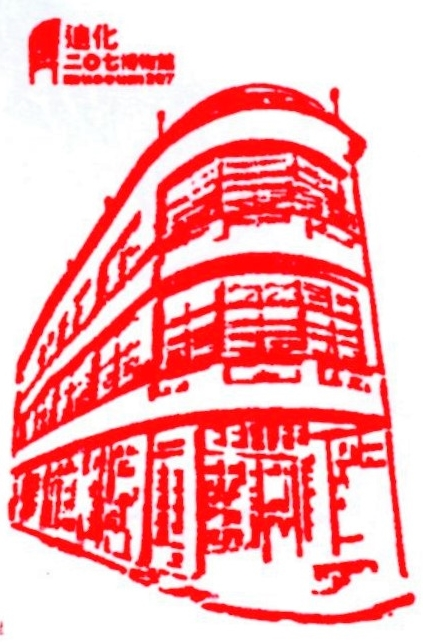
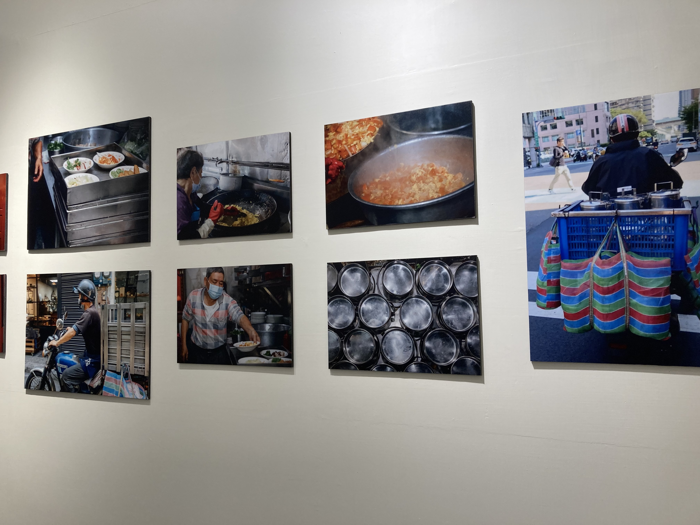
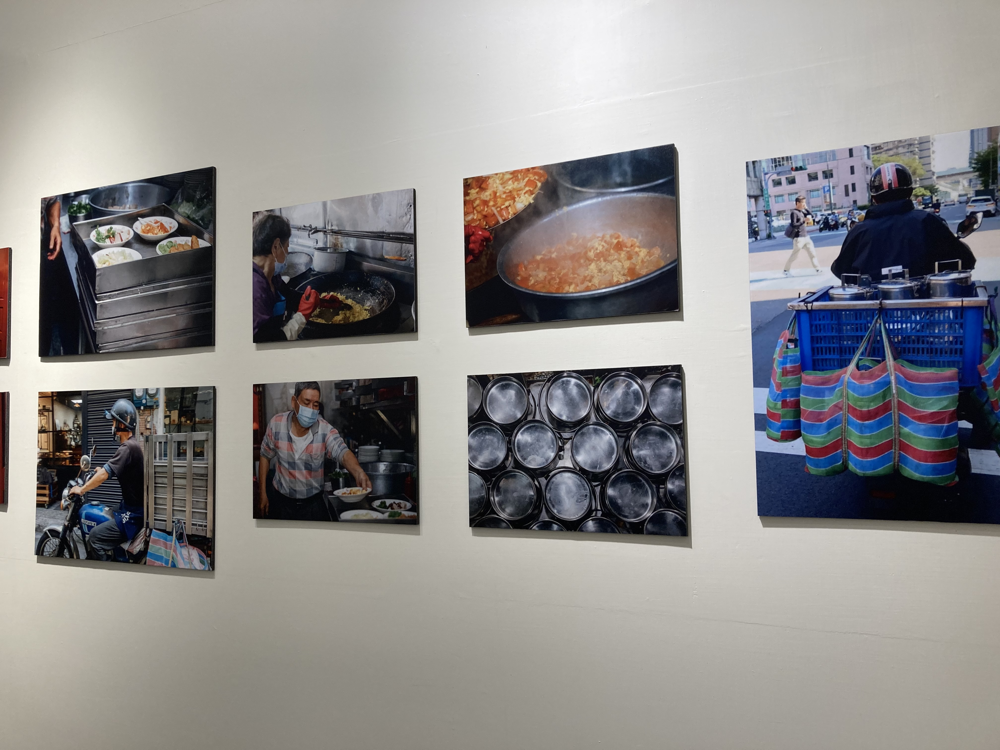

-

207博物館
日付： 2021/11/05
-

思い出を呼び起こられる舞台
迪化街で参観するつもりだった。207博物館の前に通過していた時には地面における蜂の図案に人目を惹かれた。昔の建物はテラゾ床と豊かな色である幾何図形から構成する素敵なタイルがよく見える。私の昔ごろの家に似ているため、見てみよう。
今回のテーマは「古い建物の化粧師」と「お弁当」の展覧であった。離島の金門県の獅子の石像で知られていて、台南や澎湖や金門でよく見られる。強い風を止める意味と飾りの機能がある。そして、壁や屋根の飾りも必要がある。色々なタイルの組み合わせによって、別々の美しさが現れる。
展覧の内容は思いの中にいつものことだと思ったのに、時代を変わったため現在にはほとんど見られなかったものだ。周囲のことをもちろんと思って、いつの間にか見慣れたものは私の生活から失ったようだ。展覧を楽しみにしたのに、ちょっと寂しかった。


 
